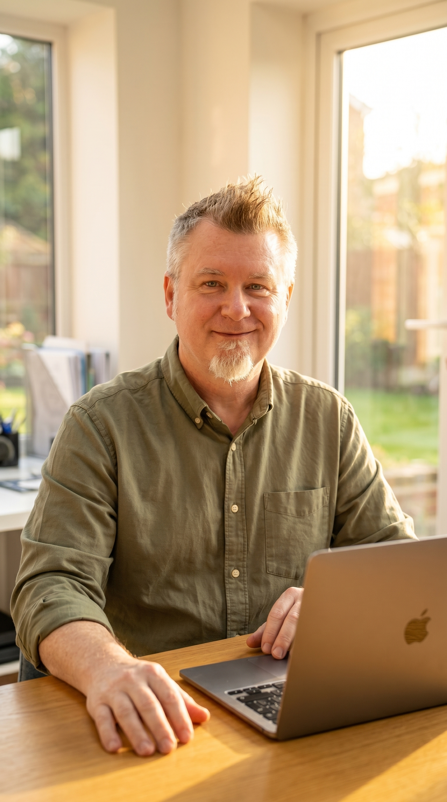

The first novel is a leap of faith. The second is a decision.

When I finished my first book, Sheffield, something shifted. Not in the world — nobody threw a parade. But inside, a quiet, stubborn knowledge took root: I can do this. That belief doesn't make the second novel easier. It makes it different. And in many ways, that difference is what allows you to write faster, with more confidence, and with a clearer sense of who you are as a storyteller.
The Fear Changes Shape
First-book fear is existential. Can I actually finish? Am I wasting my time? Who am I to write a novel? It's the fear of the unknown, and it's paralyzing because you have no evidence to argue against it.
Second-book fear is practical. Can I do it again? Was the first one a fluke? But here's the crucial difference: you now have a rebuttal. You've stood at the finish line once. The doubt still whispers, but it doesn't roar. You learn to write with the fear instead of waiting for it to disappear.
You Trust the Process. Even When It Sucks
First novel: every bad writing day feels like proof you should quit. Second novel: every bad writing day feels like Tuesday.
You know, now, that bad days are part of the machinery. You know that Chapter 9 will feel broken until Chapter 13 makes sense of it. You know that the middle sag is real and survivable. This trust doesn't eliminate the struggle; it removes the drama from it. You stop catastrophizing and start problem-solving.
You Know Your Own Speed
The first book is a voyage of discovery. You don't know if you're a sprinter or a marathoner, a morning writer or a midnight writer, an outliner or a pantser. By book two, you have data. You know that your best scenes come when you write 1,500 words without looking back. You know that Day 3 after a break is always sluggish, and Day 4 is where the magic happens. You stop experimenting with how to write and start optimizing for your way to write.
The Stakes Feel Lower, and That's Freeing
Counterintuitively, the second novel often carries less emotional weight than the first. The first book is your dream made tangible. It's the answer to "what do you do?" when you meet someone new. It's precious because it's your only one.
The second book is just... the next book. That sounds dismissive, but it's liberating. You're no longer proving your worth to yourself with every sentence. You're just building the next thing. The freedom to fail, to take risks, to write weirder or bolder or simpler — it's a gift that only comes when you've already got one in the bag.
You Stop Waiting for Permission
First novel: you wait for the right mood, the perfect idea, the sign from the universe. Second novel: you sit down and start because the calendar says it's time.
There's a professionalism that creeps in, even if you're not professional yet. You understand that inspiration is a byproduct of showing up, not a prerequisite. The 90-day timeline stops feeling insane and starts feeling like a container. Like something to work within, not against.
What Actually Changes Everything
It's not the craft. It's not the outline or the voice or the market knowledge. It's the identity shift. You stop being "someone who wants to write a novel" and become "someone who writes novels." That identity doesn't make the words flow effortlessly. But it makes the work feel inevitable. Non-negotiable. Just what you do now.
And that? That's what gets you to The End. Again.